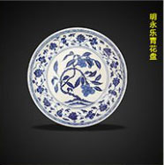
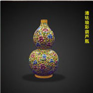
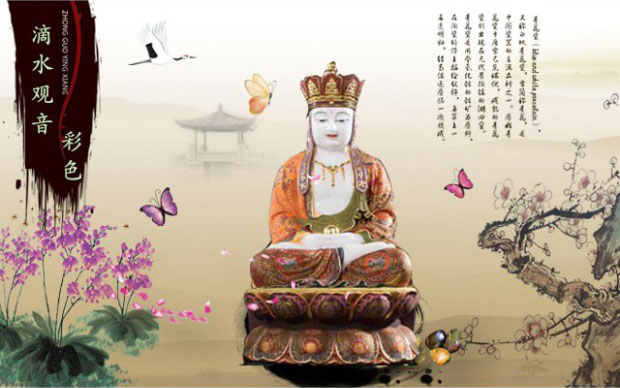
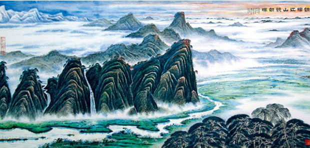

当代瓷圣田立明大师权威鉴定 稀世珍品孤品尽展其中



晨曦图
中国山水画研究会会长，世界美术家协会常务主席
多D艺术馆
每日上新
折扣专区
积分区
万能区
科技区
锦绣江山竞朝晖
东海明珠-钓鱼岛
蒸蒸日上（上）山海晨辉（左下）山海奇观（右下）
讲述名人名家名品的故事
中国著名书法大家周智慧--开篇词
灵山出宝玉 佛玉出九华
当代瓷圣田立明大师权威鉴定 稀世珍品孤品尽展其中
锦绣江山竞朝晖
优选单品
小编精选 持续上新
刘海栗 ：杰出的美术家、教育家、美术史家、画家。江苏省武进县人。1912年11月在上海乍浦路创办现代中国第一所美术学校－－上海国画美术院（上海美术专科学校前身），任校长，招收了徐悲鸿、王济远等高材生，并冲破封建势力，首创男女同校，增加用人体模特和旅行写生。1918年到北京大学讲学，并第一次举行个人画展，收到蔡元培、郭沫若的称赞。
¥ 2000刘海栗 ：杰出的美术家、教育家、美术史家、画家。江苏省武进县人。1912年11月在上海乍浦路创办现代中国第一所美术学校－－上海国画美术院（上海美术专科学校前身），任校长，招收了徐悲鸿、王济远等高材生，并冲破封建势力，首创男女同校，增加用人体模特和旅行写生。1918年到北京大学讲学，并第一次举行个人画展，收到蔡元培、郭沫若的称赞。
¥ 2000刘海栗 ：杰出的美术家、教育家、美术史家、画家。江苏省武进县人。1912年11月在上海乍浦路创办现代中国第一所美术学校－－上海国画美术院（上海美术专科学校前身），任校长，招收了徐悲鸿、王济远等高材生，并冲破封建势力，首创男女同校，增加用人体模特和旅行写生。1918年到北京大学讲学，并第一次举行个人画展，收到蔡元培、郭沫若的称赞。
¥ 2000刘海栗 ：杰出的美术家、教育家、美术史家、画家。江苏省武进县人。1912年11月在上海乍浦路创办现代中国第一所美术学校－－上海国画美术院（上海美术专科学校前身），任校长，招收了徐悲鸿、王济远等高材生，并冲破封建势力，首创男女同校，增加用人体模特和旅行写生。1918年到北京大学讲学，并第一次举行个人画展，收到蔡元培、郭沫若的称赞。
¥ 2000刘海栗 ：杰出的美术家、教育家、美术史家、画家。江苏省武进县人。1912年11月在上海乍浦路创办现代中国第一所美术学校－－上海国画美术院（上海美术专科学校前身），任校长，招收了徐悲鸿、王济远等高材生，并冲破封建势力，首创男女同校，增加用人体模特和旅行写生。1918年到北京大学讲学，并第一次举行个人画展，收到蔡元培、郭沫若的称赞。
¥ 2000刘海栗 ：杰出的美术家、教育家、美术史家、画家。江苏省武进县人。1912年11月在上海乍浦路创办现代中国第一所美术学校－－上海国画美术院（上海美术专科学校前身），任校长，招收了徐悲鸿、王济远等高材生，并冲破封建势力，首创男女同校，增加用人体模特和旅行写生。1918年到北京大学讲学，并第一次举行个人画展，收到蔡元培、郭沫若的称赞。
¥ 2000刘海栗 ：杰出的美术家、教育家、美术史家、画家。江苏省武进县人。1912年11月在上海乍浦路创办现代中国第一所美术学校－－上海国画美术院（上海美术专科学校前身），任校长，招收了徐悲鸿、王济远等高材生，并冲破封建势力，首创男女同校，增加用人体模特和旅行写生。1918年到北京大学讲学，并第一次举行个人画展，收到蔡元培、郭沫若的称赞。
¥ 2000刘海栗 ：杰出的美术家、教育家、美术史家、画家。江苏省武进县人。1912年11月在上海乍浦路创办现代中国第一所美术学校－－上海国画美术院（上海美术专科学校前身），任校长，招收了徐悲鸿、王济远等高材生，并冲破封建势力，首创男女同校，增加用人体模特和旅行写生。1918年到北京大学讲学，并第一次举行个人画展，收到蔡元培、郭沫若的称赞。
¥ 2000刘海栗 ：杰出的美术家、教育家、美术史家、画家。江苏省武进县人。1912年11月在上海乍浦路创办现代中国第一所美术学校－－上海国画美术院（上海美术专科学校前身），任校长，招收了徐悲鸿、王济远等高材生，并冲破封建势力，首创男女同校，增加用人体模特和旅行写生。1918年到北京大学讲学，并第一次举行个人画展，收到蔡元培、郭沫若的称赞。
¥ 2000刘海栗 ：杰出的美术家、教育家、美术史家、画家。江苏省武进县人。1912年11月在上海乍浦路创办现代中国第一所美术学校－－上海国画美术院（上海美术专科学校前身），任校长，招收了徐悲鸿、王济远等高材生，并冲破封建势力，首创男女同校，增加用人体模特和旅行写生。1918年到北京大学讲学，并第一次举行个人画展，收到蔡元培、郭沫若的称赞。
¥ 2000刘海栗 ：杰出的美术家、教育家、美术史家、画家。江苏省武进县人。1912年11月在上海乍浦路创办现代中国第一所美术学校－－上海国画美术院（上海美术专科学校前身），任校长，招收了徐悲鸿、王济远等高材生，并冲破封建势力，首创男女同校，增加用人体模特和旅行写生。1918年到北京大学讲学，并第一次举行个人画展，收到蔡元培、郭沫若的称赞。
¥ 2000